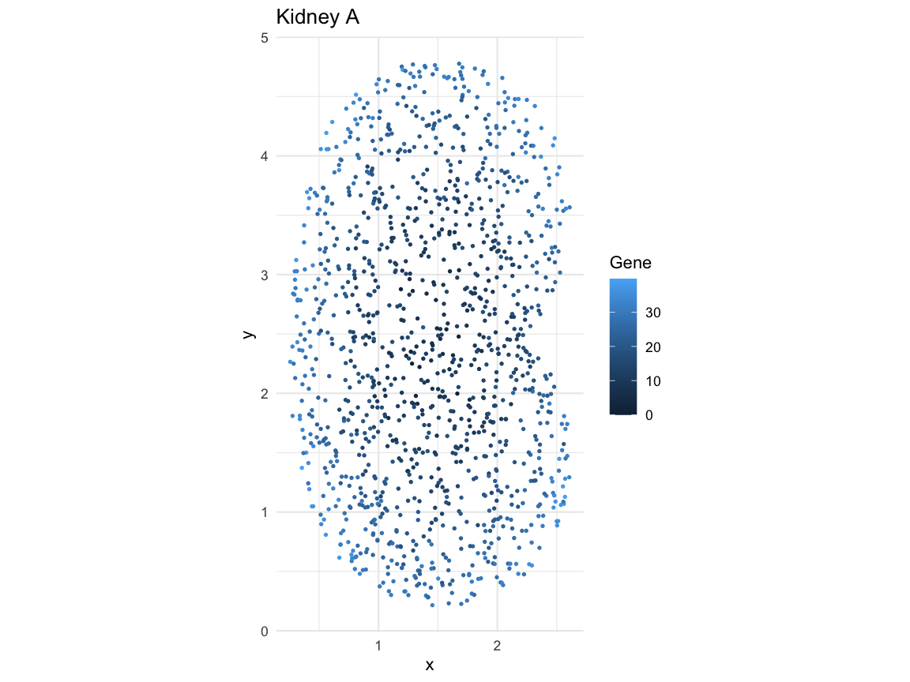
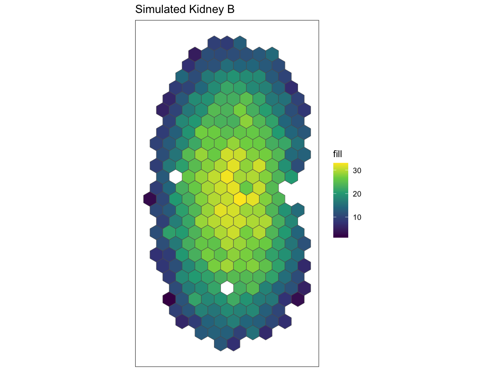
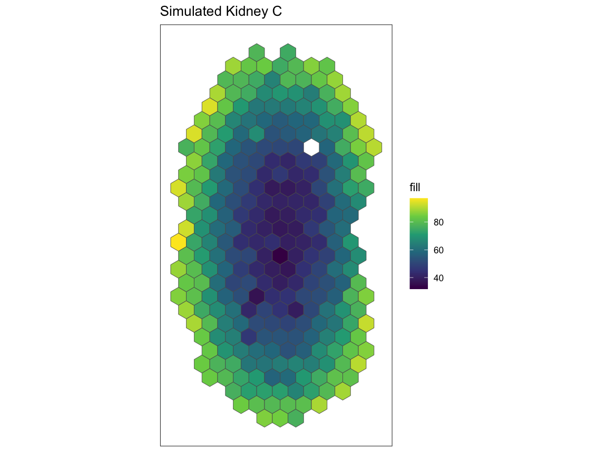
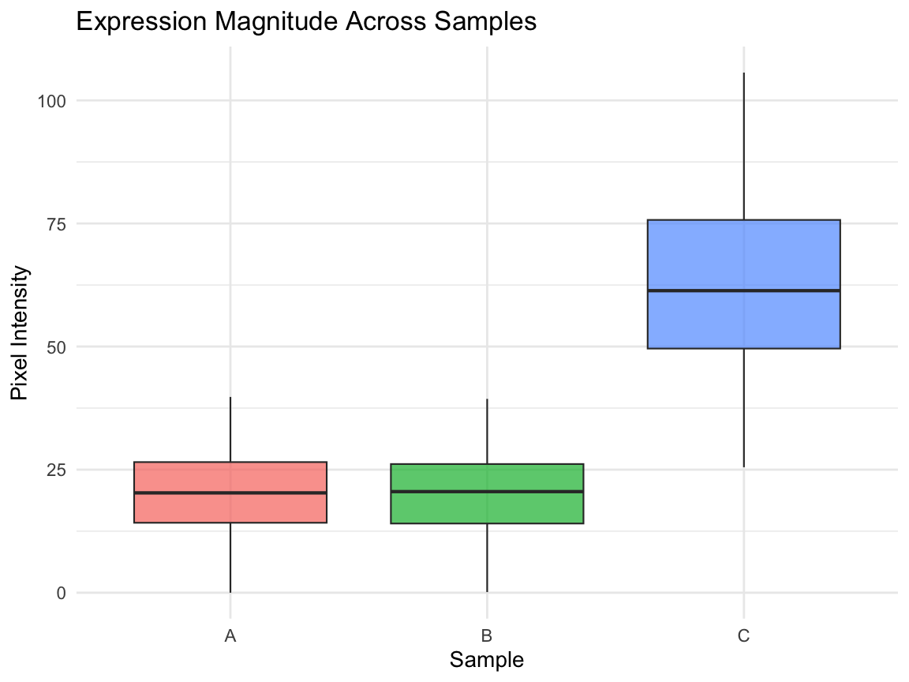
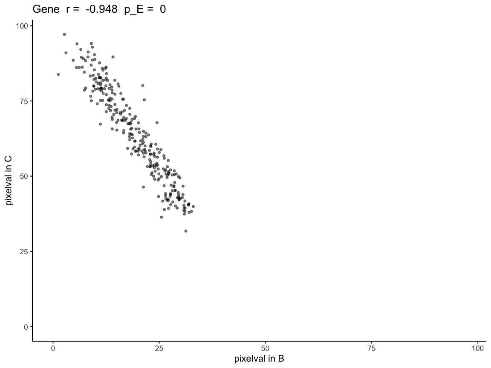
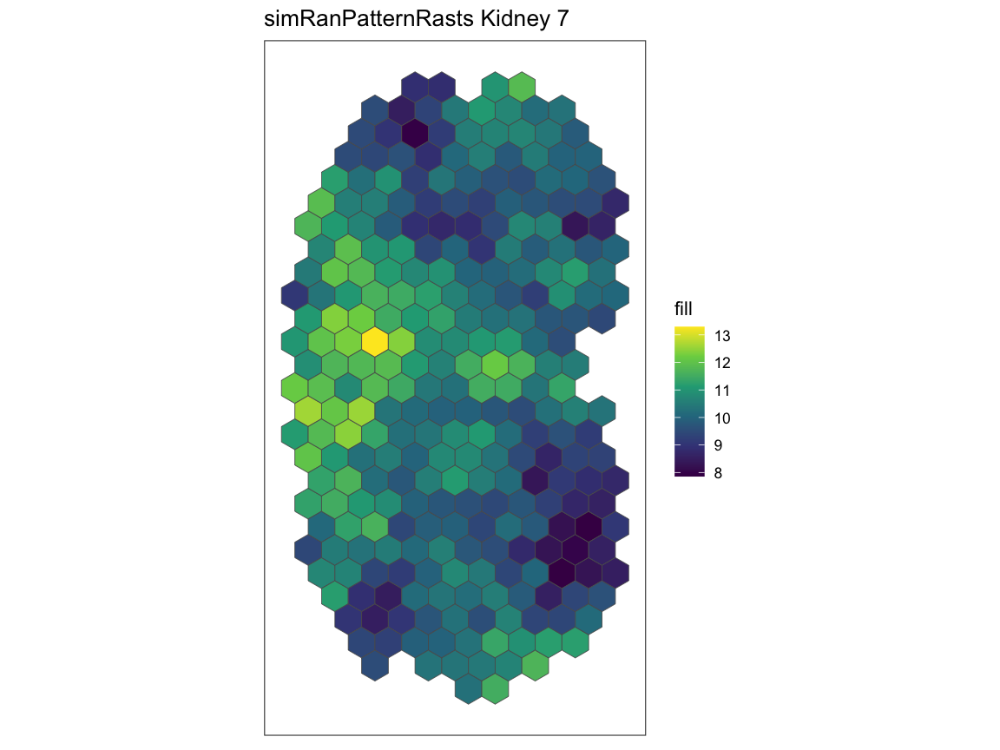
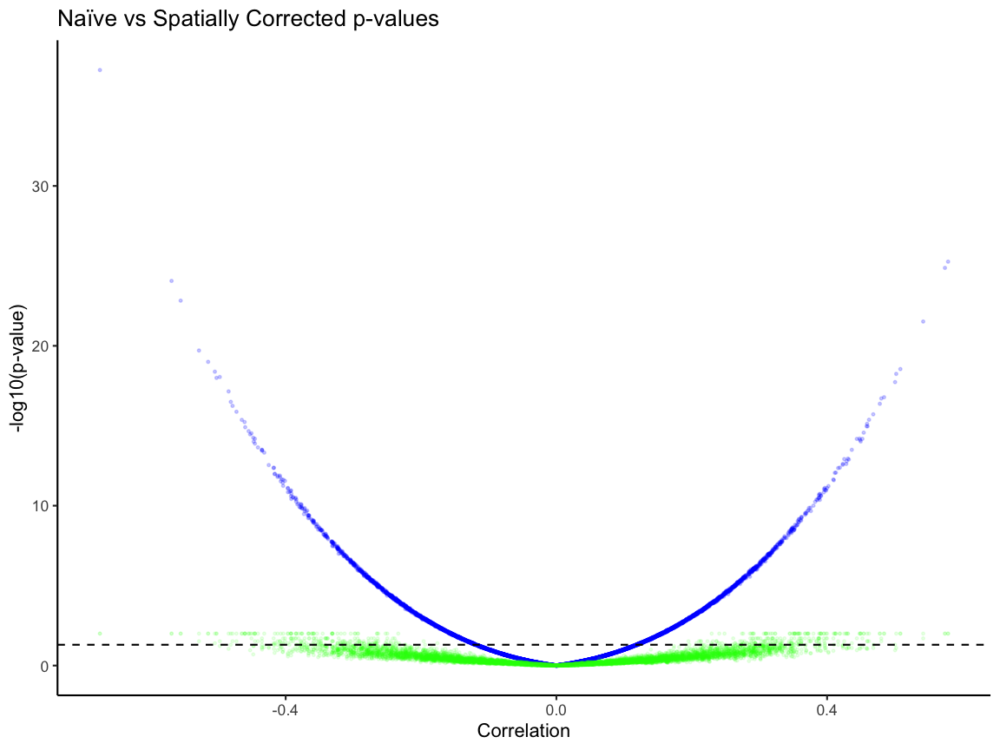
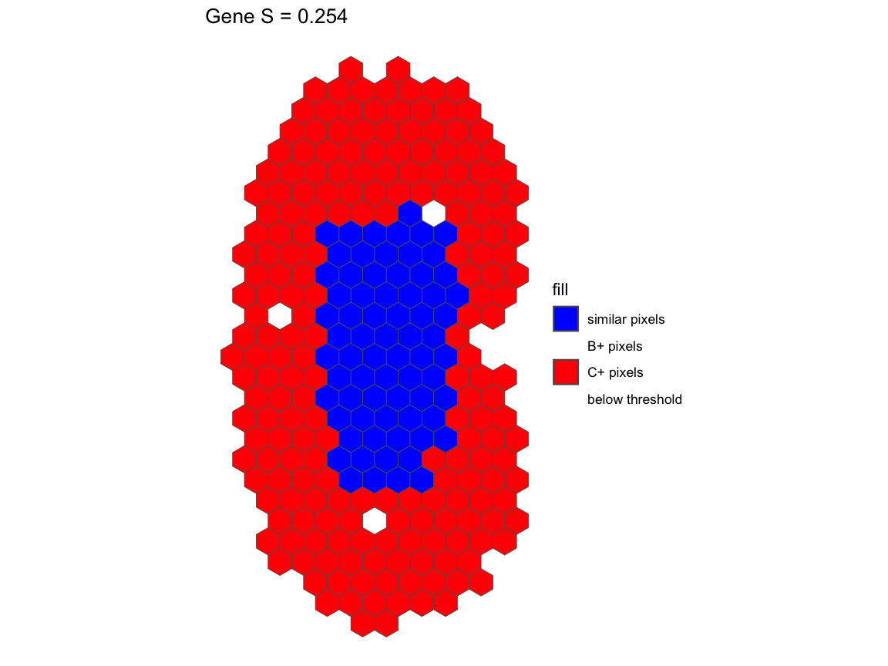

Getting Started with STcompare
Vivien Jiang
Kalen Clifton
Jean Fan
getting-started-with-STcompare_old.RmdIntroducton
Spatial transcriptomic (ST) technologies enable the investigation of how tissue organization relates to cellular function by profiling the spatial location of cells within a tissue and the gene expression profiles associated with those locations. As ST technologies are increasingly applied in the context of disease characterization and translational research, identifying genes that spatially change in their expression patterns in diseased tissues as compared to healthy controls could reveal localized molecular variation associated with pathological processes, offering insights into disease mechanisms as well as aiding in the discovery of diagnostic biomarkers.
Attempts at such comparative analysis of ST datasets can be performed using traditional non-spatial bulk or single cell transcriptomics analysis approaches such as differential gene expression (DGE) analysis, comparing the mean expression of genes between two datasets by fold-change. However, this type of DGE analysis does not consider the spatial information. As such, a gene can be identified as not differentially expressed across two datasets by having the same mean gene expression, but the gene can still have two distinct spatial patterns of expression. On the other hand, a gene can be identified as differentially expressed across the two datasets by having very different mean gene expression but have spatial expression patterns that are highly similar. By not considering spatial information, traditional DGE analysis fails to characterize such cases. To demonstrate these cases, we simulated ST datasets where one pair of genes has different radial expression patterns but the same mean expression, while the other pair has same radial expression patterns but different mean expression.
Installation
require(remotes)
remotes::install_github('JEFworks-Lab/STcompare')Tutorial
In this tutorial we will walk through applying
STcompare’s two differential spatial comparison tests to
simulated kidney datasets:
Spatial Correlation: Person correlation assumes that each sample is independent and identically distributed random variables. However, in terms of gene expression, the gene expression of one cell influences the gene expression of the neighboring cells. Spatial Correlation computes the empirical p-value instead to consider the dependent relationship. We will show why the p-value null distribution correction is needed in the Spatial Correlation test.
Spatial Fold Change: Computes a Similarity score for each gene in the comparison, compares the change in expression at matched locations.
Simulated Pattern Kidney
Here we load in a simulated kidney dataset that we will use as an example dataset for the rest of the tutorial.
‘SpatialExperiment’
objects store spatial transcriptomics data, combining gene expression
matrices with the spatial coordinates of each spot or cell.
speKidney is a list of three SpatialExperiment
objects representing simulated kidneys, where A and B share expression
magnitude but differ in spatial pattern, and A and C share spatial
pattern but differ in magnitude.
data("speKidney")
head(speKidney)
#> $A
#> class: SpatialExperiment
#> dim: 1 1229
#> metadata(0):
#> assays(1): counts
#> rownames(1): Gene
#> rowData names(0):
#> colnames(1229): cell1 cell2 ... cell1228 cell1229
#> colData names(1): sample_id
#> reducedDimNames(0):
#> mainExpName: NULL
#> altExpNames(0):
#> spatialCoords names(2) : x y
#> imgData names(0):
#>
#> $C
#> class: SpatialExperiment
#> dim: 1 1297
#> metadata(0):
#> assays(1): counts
#> rownames(1): Gene
#> rowData names(0):
#> colnames(1297): cell1 cell2 ... cell1296 cell1297
#> colData names(1): sample_id
#> reducedDimNames(0):
#> mainExpName: NULL
#> altExpNames(0):
#> spatialCoords names(2) : x y
#> imgData names(0):
#>
#> $B
#> class: SpatialExperiment
#> dim: 1 1242
#> metadata(0):
#> assays(1): counts
#> rownames(1): Gene
#> rowData names(0):
#> colnames(1242): cell1 cell2 ... cell1241 cell1242
#> colData names(1): sample_id
#> reducedDimNames(0):
#> mainExpName: NULL
#> altExpNames(0):
#> spatialCoords names(2) : x y
#> imgData names(0):
speA <- speKidney$A
df <- cbind(
as.data.frame(spatialCoords(speA)),
as.data.frame(colData(speA))
)
gene_expr <- as.numeric(assay(speA, "counts")["Gene", ])
df$Gene <- gene_expr
ggplot(df, aes(x = x, y = y, color = Gene)) +
geom_point(size = 0.6) +
coord_equal() +
theme_minimal() +
labs(x = "x", y = "y", title = "Kidney A")
Each element of speKidney contains a gene-expression
assay, x–y spatial coordinates for each spot, and associated metadata.
The three samples vary slightly in the number of spatial locations but
share the same structure.
First, we use SEraster to rasterize this list of
simulated kidneys, stored as SpatialExperiment objects,
onto the same coordinate plane.
rastKidney <- SEraster::rasterizeGeneExpression(speKidney,
assay_name = 'counts', resolution = 0.2,
square = FALSE)
# After rasterization, the output is a SpatialExperiment object, but the spatial units are now raster pixels rather than individual cells or spots. The assay has been converted to pixelval, and additional metadata (num_cell, cellID_list, geometry) records which original cells contributed to each pixel.
head(rastKidney)
#> $A
#> class: SpatialExperiment
#> dim: 1 282
#> metadata(0):
#> assays(1): pixelval
#> rownames(1): Gene
#> rowData names(0):
#> colnames(282): pixel52 pixel53 ... pixel416 pixel417
#> colData names(6): num_cell cellID_list ... geometry sample_id
#> reducedDimNames(0):
#> mainExpName: NULL
#> altExpNames(0):
#> spatialCoords names(2) : x y
#> imgData names(0):
#>
#> $C
#> class: SpatialExperiment
#> dim: 1 287
#> metadata(0):
#> assays(1): pixelval
#> rownames(1): Gene
#> rowData names(0):
#> colnames(287): pixel51 pixel52 ... pixel417 pixel431
#> colData names(6): num_cell cellID_list ... geometry sample_id
#> reducedDimNames(0):
#> mainExpName: NULL
#> altExpNames(0):
#> spatialCoords names(2) : x y
#> imgData names(0):
#>
#> $B
#> class: SpatialExperiment
#> dim: 1 279
#> metadata(0):
#> assays(1): pixelval
#> rownames(1): Gene
#> rowData names(0):
#> colnames(279): pixel53 pixel65 ... pixel416 pixel417
#> colData names(6): num_cell cellID_list ... geometry sample_id
#> reducedDimNames(0):
#> mainExpName: NULL
#> altExpNames(0):
#> spatialCoords names(2) : x y
#> imgData names(0):
# These are the plots to visualize what the kidneys looks like
pA <- plotRaster(rastKidney$A, plotTitle = "Simulated Kidney A")
pA
pB <- plotRaster(rastKidney$B, plotTitle = "Simulated Kidney B")
pB
pC <- plotRaster(rastKidney$C, plotTitle = "Simulated Kidney C")
pC
Mean comparision is not sufficient d
Traditionally, these simulated kidneys would be compared using the average of the mean expression.
# Convert the rasterized pixel values for each kidney (A, B, C) into one dataframe.
# Each kidney’s pixel values are extracted from the "pixelval" assay and stored as a numeric vector.
df <- data.frame(
value = c(
as.numeric(assay(rastKidney$A, "pixelval")),
as.numeric(assay(rastKidney$B, "pixelval")),
as.numeric(assay(rastKidney$C, "pixelval"))
),
# Create a "sample" column showing which kidney each pixel belongs to.
# The `rep()` call ensures that the correct number of labels (A/B/C) is assigned
# based on the length of each pixel value vector.
sample = factor(rep(
c("A", "B", "C"),
times = c(
length(as.numeric(assay(rastKidney$A, "pixelval"))),
length(as.numeric(assay(rastKidney$B, "pixelval"))),
length(as.numeric(assay(rastKidney$C, "pixelval")))
)
))
)
# Plot a boxplot comparing the distribution of pixel intensities across the 3 kidneys.
# This represents a traditional magnitude-only comparison,
# which cannot distinguish pattern similarity/differences.
compare_box_plot <- ggplot(df, aes(x = sample, y = value, fill = sample)) +
geom_boxplot(outlier.shape = 16, outlier.size = 1.5, alpha = 0.7) +
labs(x = "Sample", y = "Pixel Intensity", title = "Expression Magnitude Across Samples") +
theme_minimal(base_size = 14) +
theme(legend.position = "none")
compare_box_plot
Comparing the means allows us to differentiate between A and C since the expression magnitudes have a fold difference. However, comparing the mean does not capture the spatial gene expression difference between A and B.
- We will use
spatialCorrelationGeneExptest to quantify the correlation in gene expression pattern between (A and B) and (A and C). Where (A and B) will have a significant negative correlation and (A and C) will have a significant postive correation. - And we will use
SpatialSimilaritytest quantify the difference in gene expression magnitude not reflected by DGE between (A and B)
Using STcompare
Input formatting
Tissue Alignment
ForSTcompareto produce meaningful comparisons, the tissues must first be spatially aligned so that corresponding structures are matched across samples. TheSTalignpackage can be used to align two tissues. STalign TutorialRasterization
STcomparetakes a list ofSpatialExperimentobjects and requires them to be on a shared coordinate plane. UseSErasterto rasterize multiple samples onto the same plane, allowingSTcompareto pairwise compare across any number of samples. SEraster formatting tutorial
Spatial correlation
Now, we will use spatialCorrelationGeneExp to understand
correlation of expression across pixels.
- correlationCoef Pearson’s is correlation coefficient shows the strength and direction of a linear relationship between the two objects
-
pValueNaive is the analytical p-value naively
assuming independent observations, often time not accurate
- pValuePermuteY is the p-value when creating an empirical null from permutations of observations in Y – the higher of pValuePermuteY, pValuePermuteX, is more accurate p-value due to corrected null distribution
- pValuePermuteX the p-value when creating an empirical null from permutations of observations in X
- deltaStarMedianX the median delta star (the delta which minimizes the difference between the variogram of the permutation and the variogram of observations) across permutations of X
- deltaStarMedianY the median delta star across permutations of Y
- deltaStarXlist of delta star for all permutations of X
- deltaStarY is list of delta star for all permutations of Y
- nullCorrelationsX correlation coefficients for Y and all permuations of X
- nullCorrelationsY correlation coefficients for X and all permuations of Y
Gene expression at matched pixel locations are negatively correlated in A and B.
# From the list of rasterized kidneys, rastKidney, we will take a subset of rastKidney
# rastGexpListAB is a list of two kidneys, A and B
rastGexpListAB <- list(A = rastKidney$A, B = rastKidney$B)
# spatialCorrelationGeneExp takes input of a list of two SpatialExperiment objects -- rastGexpListAB
# nThreads, the default is 1, should be set to the number of cores available to allow for parallel computing
scAB <- spatialCorrelationGeneExp(rastGexpListAB, nThreads = 1)
# correlationCoef is showing a negative linear relationship
# Both the naive and the permuted p-values (pValuePermuteY and pValuePermuteX) are showing that the correlation is significant
head(scAB)
#> correlationCoef pValueNaive pValuePermuteX pValuePermuteY
#> Gene -0.9472813 5.652003e-136 0 0
#> deltaStarMedianX deltaStarMedianY deltaStarX deltaStarY
#> Gene 0.2 0.2 0.1, 0.1.... 0.5, 0.2....
#> nullCorrelationsX nullCorrelationsY
#> Gene 0.119003.... 0.087039....
# visualization of the negative correlation
# plotCorrelationGeneExp needs the list of rasterized SpatialExperiment objects, the table from spatialCorrelationGeneExp of the same objects,
# and the gene name you are trying to plot. In the case, the gene name is "Gene".
expAB <- plotCorrelationGeneExp(rastGexpListAB, scAB, "Gene")
expAB
Gene expression at matched pixel locations are positively correlated in A and C.
# From the list of rasterized kidneys, rastKidney, we will take a subset of rastKidney
# rastGexpListAC is a list of two kidneys, A and C
rastGexpListAC <- list(A = rastKidney$A, C = rastKidney$C)
# correlationCoef is showing a positive linear relationship
# Both the naive and the permuted p-values (pValuePermuteY and pValuePermuteX) are showing that the correlation is significant
scAC <- spatialCorrelationGeneExp(rastGexpListAC)
head(scAC)
#> correlationCoef pValueNaive pValuePermuteX pValuePermuteY
#> Gene 0.9431531 1.409195e-133 0 0
#> deltaStarMedianX deltaStarMedianY deltaStarX deltaStarY
#> Gene 0.2 0.2 0.4, 0.3.... 0.4, 0.2....
#> nullCorrelationsX nullCorrelationsY
#> Gene 0.201840.... 0.036416....
# visualization of the positive correlation
# plotCorrelationGeneExp needs the list of rasterized SpatialExperiment objects, the table from spatialCorrelationGeneExp of the same objects,
# and the gene name you are trying to plot. In the case, the gene name is "Gene".
expAC <- plotCorrelationGeneExp(rastGexpListAC, scAC, "Gene")
expAC
Gene expression at matched pixel locations are negatively correlated in B and C.
# From te list of rasterized kidneys, rastKidney, we will take a subset of rastKidney
# rastGexpListAC is a list of two kidneys, B and C
rastGexpListBC <- list(B = rastKidney$B, C = rastKidney$C)
scBC <- spatialCorrelationGeneExp(rastGexpListBC)
head(scBC)
#> correlationCoef pValueNaive pValuePermuteX pValuePermuteY
#> Gene -0.9478025 4.914519e-138 0 0
#> deltaStarMedianX deltaStarMedianY deltaStarX deltaStarY
#> Gene 0.2 0.2 0.2, 0.3.... 0.2, 0.3....
#> nullCorrelationsX nullCorrelationsY
#> Gene -0.34439.... 0.221883....
# visualization of the negative correlation
# plotCorrelationGeneExp needs the list of rasterized SpatialExperiment objects, the table from spatialCorrelationGeneExp of the same objects,
# and the gene name you are trying to plot. In the case, the gene name is "Gene".
expBC <- plotCorrelationGeneExp(rastGexpListBC, scBC, "Gene")
expBC ### Why does p-value correction matter
simRanPatternRasts is a list of 100 simulated
SpatialExperiment objects representing kidney-shaped
datasets, each containing one independently generated spatially
patterned gene with no correlation between datasets. Each dataset
consists of N = 5000 simulated cells distributed within a kidney-shaped
region, with spatial coordinates and expression values generated from
Gaussian random fields. All it the objects in
simRanPatternRasts is already rasterized onto the same
coordinate plane.
Using the kidney 1 and kidney 7 in the
simRanPatternRasts dataset, we see that the p-value is in
the significant range (p-value < 0.05). However, based on the way the
kidneys are simulated (simulated to have no correlation), this should
not be the case, which is reflected in the permuted p-values. The unlike
the naive p-value, the permuted p-values do not show significant
correlation.
# using plotRaster from the SEraster package to visualize kidney 1 and 7
plotRaster(simRanPatternRasts[[1]], plotTitle = "simRanPatternRasts Kidney 1")
plotRaster(simRanPatternRasts[[7]], plotTitle = "simRanPatternRasts Kidney 7")
# taking a subset of simRanPatternRasts
# rastGexpList is a list of rasterize SpatialExperiment objects kidney 1 and kidney 7
rastGexpList <- list(kidney_1 = simRanPatternRasts[[1]], kidney_7 = simRanPatternRasts[[7]])
# finding the correlation and the p-value of kidney 1 and kidney 7
sc <- spatialCorrelationGeneExp(rastGexpList)
# the naive p-value is showing that the correlation is significant
# while both of the permuted p-values are showing not significant p-values
head(sc)
#> correlationCoef pValueNaive pValuePermuteX pValuePermuteY deltaStarMedianX
#> 1 -0.2189486 0.0002533931 0.29 0.19 0.1
#> deltaStarMedianY deltaStarX deltaStarY nullCorrelationsX
#> 1 0.25 0.2, 0.1.... 0.9, 0.1.... 0.044322....
#> nullCorrelationsY
#> 1 0.044163....
# the plot further shows that there isn't a correlation between kidney 1 and kidney 7
plotCorrelationGeneExp(rastGexpList, sc, "1")
For each pairwise kidney SpatialExperiment object in the list, the
corrected p-value is computed using
spatialCorrelationGeneExp
# This code was run once to generate the precomputed vignette results.
# Full script available at:
# system.file("scripts", "simRanPatternSpatialCorrelation.R", package = "STcompare")
data_path <- system.file("extdata", "simRanPatternResults.RData", package = "STcompare")
load(data_path)
# Var1 and Var2 is every pairwise combination between the 100 kidneys
# cors is the correlation of that pair
# corspv is the naive p-value for that pair
# corspv_correct is the permuted p-value for that pair (chosen to be the higher of pValuePermuteY and pValuePermuteX)
head(cors_df)
#> Var1 Var2 cors corspv corspv_corrected
#> 1 1 1 1.00000000 0.00000000 NA
#> 2 2 1 -0.04158115 0.49227077 0.85
#> 3 3 1 0.09066560 0.13439158 0.56
#> 4 4 1 0.05189013 0.39310096 0.80
#> 5 5 1 0.11116927 0.06515094 0.45
#> 6 6 1 0.10915193 0.07229390 0.47
# remove the na values
cors_df <- na.omit(cors_df)
corrected <- ggplot(cors_df) +
geom_point(aes(x =cors, y = -log10(corspv)), alpha = 0.1, size = 0.5, color = "blue") +
geom_point(aes(x =cors, y = -log10(corspv_corrected)), alpha = 0.1, size = 0.5, color = "green") +
theme_classic() +
labs(x = "Correlation", y = "-log10(p-value)",
title = "Naïve vs Spatially Corrected p-values") +
geom_hline(yintercept = -log10(0.05), linetype = 'dashed', color = "black") +
ylim(min(-log10(cors_df$corspv), na.rm = TRUE), max(-log10(cors_df$corspv), na.rm = TRUE)) +
labs(x = "Correlation" , y = "-log10(p-value)")
corrected
#> Warning: Removed 85 rows containing missing values or values outside the scale range
#> (`geom_point()`).
Without p-value correction, we observe that 50% of these p-values are less than 0.05, while after correcting for p-value only 4% of the empirical p-values are less than 0.05.
Therefore, the permuted p-value is needed to more accurately capture true correlation significance.
Spatial fold change
Now, we have use spatialSimilarity to understand the
magnitude changes cross paired pixels.
Here, we find the spatialSimilarity pairwise between in the
speKidney between (A, B, C)
# spatialSimilarity also takes in a list of 2 SpatialExperiment objects you want to compare between
# t1 and t2 are the thresholding value for the first and second object in the list.
# The threshold is used to remove pixels that have no or little expression for a given gene in the pixel.
# Failure to remove those those pixels will result in a trivial similarity score due to noise.
# If t1 and t2 aren't provided, minQuantile is used to threshold based on the quantile of expression.
# The default for minQuantile is 0.05, meaning by default the pixels at the bottom 5% are removed.
# minPixels is the percentage of pixels left after thresholding. The default is 0.1.
# When there is not enough pixels left, the similarity score will also be trivial.
# foldChange is the number of fold that are considered similar. The default is 1 fold.
# compare kidney A and B
sAB <- spatialSimilarity(
list(A = rastKidney$A, B = rastKidney$B)
)
# compare kidney A and C
sAC <- spatialSimilarity(
list(A = rastKidney$A, C = rastKidney$C)
)
# compare kidney B and C
sBC <- spatialSimilarity(
list(B = rastKidney$B, C = rastKidney$C)
)For gene Gene in the comparision between A and B, we see
that A and B has a similarity score of S=0.535. This means that 53.5% of
the intersecting pixels between A and B are within a 1
We see here that the inner radius is more highly expressed in B, while the outer radius is more highly expressed in C. The intermediate radius is shared between the two.
# To get the linear regression and the pixel classification plots,
# the inputs are the spatialSimilarity output and the gene name
# The Linear regression shows the areas in which gene expression
# each pixels falls, the pixel is either: higher in B, similar, higher in A
lrAB <- linearRegression(input=sAB, gene = "Gene")
lrAB
# Similar to the linear regression plot, the pixel classification plot takes
# the plot of the rasterized kidney and classifies each pixel with the pixels
# that are below the threshold are gray
pcAB <- pixelClass(input=sAB, gene="Gene")
pcAB
All the pixels have over 1-fold increase in C relative to the same pixels in A.
# all the pixels have higher expression in C than in A,
# and are outside of the similar expression boundaries
lrAC <- linearRegression(input=sAC, gene = "Gene")
lrAC
pcAC <- pixelClass(input=sAC, gene="Gene")
pcAC
25.4% of B and C pixels are within 1-fold difference of each other, while the rest are not.
lrBC <- linearRegression(input=sBC, gene = "Gene")
lrBC
# We see here that the inner radius is similar expression magnitudes, while the outer radius is more highly expressed in C.
pcBC <- pixelClass(input=sBC, gene="Gene")
pcBC
Conclusion
Changes in expression magnitude and pattern can be independent observations.
- A and B have similar magnitude (no fold change) and negatively correlated
- A and C do not have similar magnitude and are positively correlated
- B and C do not have similar magnitude and are negatively correlated
These are differences that would otherwise have been able to be detected using mean gene expression magnitude comparison. P value correction is needed to take into account that gene expression in each pixel is not independent from that of its neighbors’.